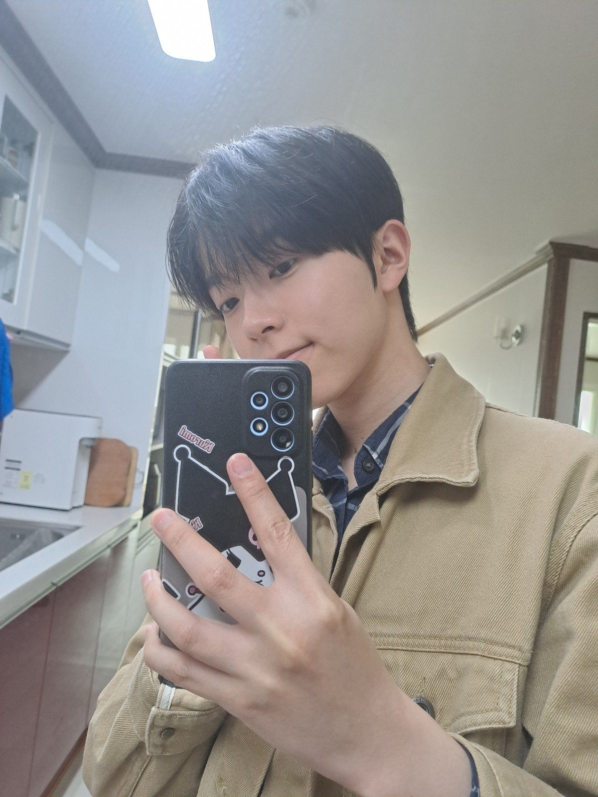

나를 소개합니다!

이름
소속
취미
성격
화법
조현빈
숭실대학교 글로벌미디어학부
음악듣기, 노래방가기, 부동산 분석
일이나 업무에 있어서는 꼼꼼한 편이고, 잘 모르는 분야의 일이라도 관심이 생기면 그것에 대해 영상, 서적 등의 도움을 받거나 아니면 온라인 학습을 통해 스스로 학습해나가고자 하는 경향이 있습니다.
평소 애매하게 말하면 소통의 오류가 생긴다고 생각하기에, 상대방을 존중하는 선에서 직설적으로 말하는 것을 좋아합니다.
다들 한 학기 동안 잘 지내봐요!